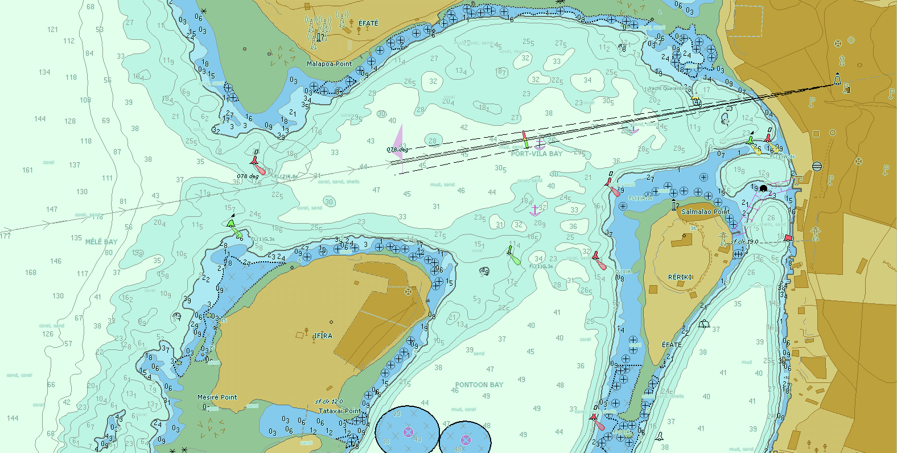

2015
01/04
Vanuatu charting in support of humanitarian relief efforts
The South Pacific island chain of Vanuatu was devastated on March 13th by Cyclone Pam. This event is now regarded as one of the most severe tropical cyclone disasters in the history of Vanuatu, and has resulted in the tragic loss of 16 lives. The majority of the damage is at the capital of Port Vila, although other parts of the 65 inhabited islands have also been affected by the natural disaster. The United Nations have confirmed that humanitarian aid has been delivered to all of the affected islands of the country, providing food packages and water for more than 166,000 people, however, this important work will continue for as long as necessary in support of the affected communities.
The United Kingdom Hydrographic Office (UKHO), which is the primary charting authority for Vanuatu, has decided to rapidly issue new editions of two Vanuatu ENC cells in response to the disaster. These new editions, GB501638 Northern Vanuatu - Espiritu Santo - Luganville and GB501494 Port Vila are to be distributed through IC-ENC on a free of charge basis for use by all interested parties and to assist with the humanitarian relief effort. At the first opportunity, these cells will be included within the weekly exchange set to the IC-ENC Value Added Reseller (VAR) network. They will also be available to download on the IC-ENC website by clicking here.
Both IC-ENC and UKHO are pleased to be able to support the international community at this challenging time.

×

Image of GB501494 Port Vila new edition
Email a link